Your pain diary, one minute a day. And weeks you can finally put into words.
OUCH is a free, open-source pain diary for fibromyalgia and other chronic pain. You log your day on your phone; your diary stays with you. Little by little, it helps you see what makes things worse and what eases them, and you walk into your appointments with your weeks in hand.
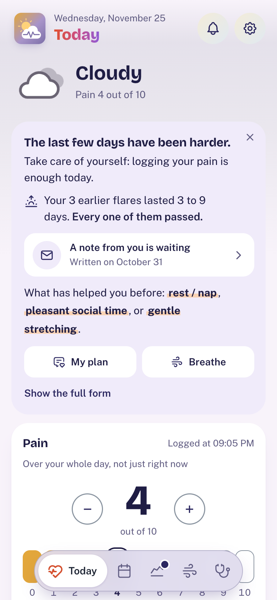
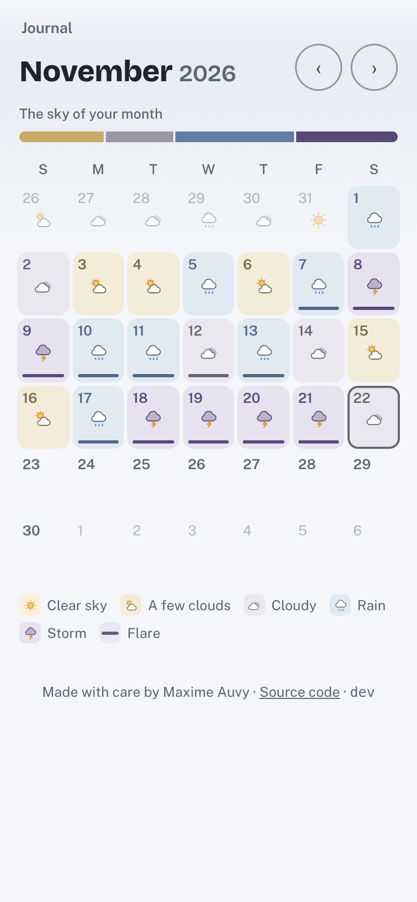
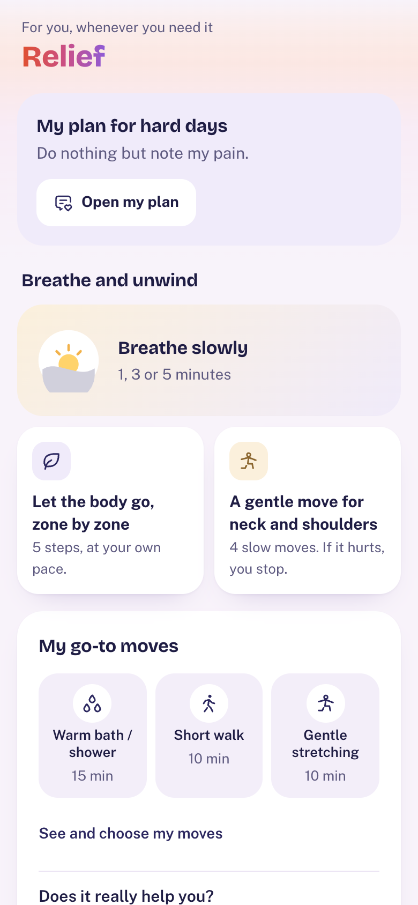
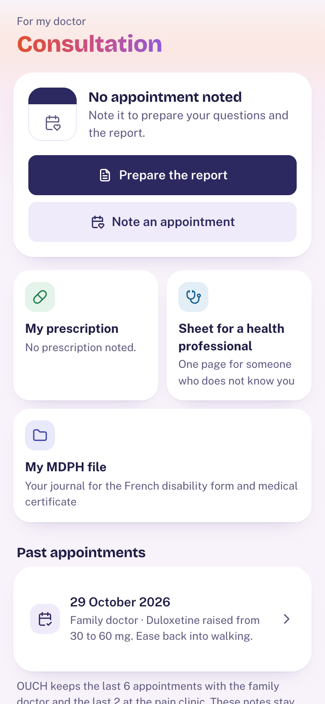
Based on version 0.17.0 · 25 November 2026. The screenshots come from the demo mode: made-up data. OUCH is a diary: it does not replace your doctor’s advice, makes no diagnosis and recommends no treatment. Free software, CeCILL v2.1 licence.
maxauvy.github.io/OUCH
1 · In short
Why keep a diary, and why this one
Something you probably know
“So, how have things been since last time?” At an appointment, you have to remember several weeks at once, and the last few days tend to take up all the room. The hardest days, the ones you would like to be able to show, are also the days you don’t have the strength to write anything down.
OUCH is made for those days: big buttons, almost nothing to fill in, and a screen that gets lighter when you are struggling. One number is enough for your day to count.
Three promises
Simple. Your pain, from 0 to 10, and it’s logged. Everything else is optional: add what helps you understand yourself, nothing more.
Yours. No account, no server. Your diary stays on your phone, and you decide what you share, and with whom.
Honest. OUCH describes what you logged. When it spots a link in your notes, it tells you it is a lead to look at, and that it is up to you to keep it or set it aside.
< 1 minto log your day
Freeopen source, no ads
0 accountsnothing to sign up for, no password needed to use it
Offlineonce installed on your home screen
What OUCH does for you
Keeps track of your days, even the shortest entries.
Shows you how things change, and the days harder than usual.
Notices what comes back on good days, and what comes before bad ones.
Suggests trying something for ten days, on days drawn at random, then comparing.
Helps you prepare your appointment, with a report for your doctor.
What it leaves to you
It makes no diagnosis and doesn’t tell you which treatment to take.
It doesn’t grade you: no score, no streak to keep, nothing to lose.
It doesn’t draw conclusions for you: a link stays a lead.
It sends nothing unless you ask it to.
Four letters, four steps
O · Ouch
You log your pain as it is, without having to justify it.
U · Understand
You understand, at your own pace, what makes your pain worse and what eases it.
C · Chart
You show your weeks, to your doctor or to your loved ones.
H · Heal
You look after yourself, with what really helps you.
Who is it for?
Anyone living with chronic pain: fibromyalgia first, and also rheumatoid arthritis, spondyloarthritis, psoriatic arthritis, endometriosis, migraine, low back pain, multiple sclerosis or myofascial pain. You tell the app your conditions (diagnosed or suspected), and it suggests the measures most useful to you. Everything stays optional.
OUCH · a guide for users2
2 · Overview
Four steps, five tabs
1
LogEvery day, in under a minute: your pain and, if you like, sleep, fatigue, painful areas, your treatments, what helped.
2
UnderstandYour diary tells a story: the curve, the harder days, before and after a treatment change, what your notes reveal.
3
Find reliefA plan written in advance for hard days, your go-to moves with a timer, slow breathing.
4
ShareYour questions and a report for your doctor, a sheet for a health professional who doesn’t know you, today’s weather for your loved ones.
Where to find what
Tab
What you’ll find there
When to use it
Today
Today’s pain, your painful areas, your measures, your treatments, what helped, a note; your weather to share; the “My kids” page
Every day, one minute. This is where the app opens.
Journal
The month’s calendar, each day coloured by its weather
To find a particular day, or correct an entry.
Trends
Your curve, what happened, your painful areas, your treatments, what your notes say, comparing two periods
Now and then, when you feel like stepping back. No rush.
Relief
My plan for hard days, my go-to moves, slow breathing, two relaxation exercises
Prepare it on a good day; open it on a harder one.
Consultation
Your appointment and your questions, your prescription, the report, the sheet for a health professional
A few days before an appointment, and just after.
Settings
Your profile, what you track, the reminder, suggestions, the lock, your backups, the style
At the start, then whenever you want to change something.
What’s new
The bell next to Settings: what changes in OUCH, and a few words for you
When a small amber dot shows on it. Nothing you have to do.
When you are struggling, the app steps back
On harder days, the screen shrinks to your pain and a kind word. Leads, trials and summaries wait until you feel better. On other days, whatever there is to see fits in one line (“2 small things for you”), which you open if you feel like it.
Also: French or English, two styles (“Weather” and “Plain”), each in light or dark, and text that follows your phone’s font size.
OUCH · a guide for users3
3 · Getting started
Five minutes to set up
1
Open the addressOn your phone: maxauvy.github.io/OUCH, or scan the code below with your camera. Nothing to download from an app store.
2
Install it on your home screenOn iPhoneOpen the page in Safari, tap “Share”, then “Add to Home Screen”.On AndroidIn your browser’s menu, look for “Install app” or “Add to Home screen”.OUCH then opens in one tap, like any other app, and works without a connection. It is also what best protects your diary (page 10).
3
Let it guide you, or skipThe first time, a setup assistant asks about your conditions, your first name, your treatments, a reminder. Every question can be skipped, and you can run the assistant again later from Settings.
4
Log your first dayTap your pain, from 0 to 10. That’s all it takes.
5
Pick a reminder, if you likeThe most reliable one: an event in your phone’s calendar, which rings every day at the time you choose, even with the app closed. Nothing is sent for this.
Your measures, sorted for you
Depending on the conditions you mention, the assistant sorts what you can track into three levels: recommended for you, also useful, and everything else. Tick what speaks to you. Morning stiffness, waking up from pain, trouble with everyday movements, headache, periods… The fewer you tick, the quicker your entry. You can add or remove some at any time (Settings).
Just curious? Try it with an example
In the assistant or in Settings, “Discover with an example” loads 90 made-up days, with a guided tour, in a separate space: your own diary isn’t touched. “Leave” clears the example. You can also open maxauvy.github.io/OUCH/?demo.
maxauvy.github.io/OUCH
OUCH also opens in a computer’s browser and can be installed there. But your diary stays on the device where you kept it: choose the one you have to hand most often, usually your phone.
Your first week
Pick a moment. The evening, for example, when the day is behind you. The reminder helps turn it into a habit.
Start small. Pain alone, then sleep if you like. Add the rest when you feel like it.
Let it come. Curves and leads need a few weeks of notes. There is nothing to get right until then.
OUCH · a guide for users4
4 · Logging your day
The “Today” tab: one minute is enough
A hard dayThe screen gets lighter: a gentle word, what has helped you before, your pain alone.
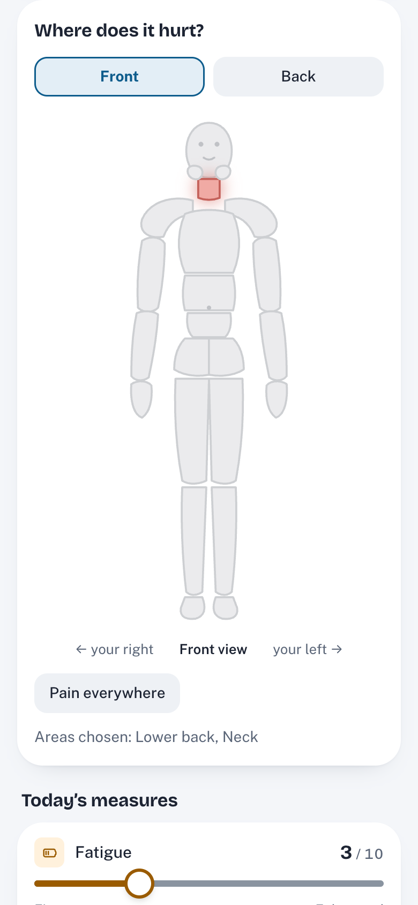
Where does it hurt?Front and back: a large region, then the part and the side.
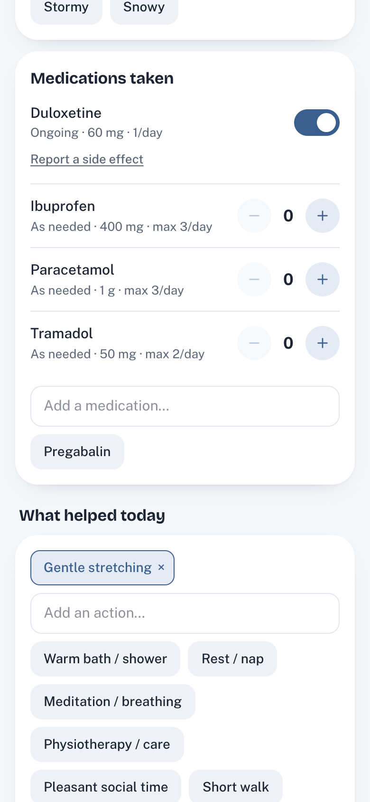
Treatments and what helpedYour regular treatment is already ticked; add the as-needed doses.
What you can log
Pain
From 0 to 10, eleven boxes to tap. Think of your whole day, not just the moment you log it. It’s the only thing you need.
Painful areas
On a body outline, 25 areas, left and right; “pain everywhere” if that’s how it is.
Measures
Fatigue, sleep, stress, brain fog, mood, activity, and the ones you chose.
Treatments
Set up once. Then: as-needed doses, relief, a side effect, a missed dose.
What helped
A short walk, a warm bath or shower, stretching, meditation… whatever you have noticed works for you.
If you like
The day’s weather (automatic or by hand), your cycle, a free note.
A few pointers
A missed day doesn’t matter. It is never made up in the calculations. If yesterday wasn’t logged, the app offers to go back to it, once, without reproach.
You can correct anything later, from the Journal. A day written afterwards is simply marked as such.
Treatment changed? Say so in your treatments (new dose, stopped): the change will appear on your curve, and you will be able to see before and after.
Is a harder stretch starting? You can note it yourself, below today’s pain: when it began, what may have played a part, a word. The screen gets lighter, and your doctor will see it in the report.
Your weather of the day. Your measures add up to a sky, from clear to stormy. It is a picture, not a grade: it says how your day was, without judging it.
OUCH · a guide for users5
5 · Understanding
Journal and Trends: what your diary tells you
JournalOne month at a time, each day with its weather.
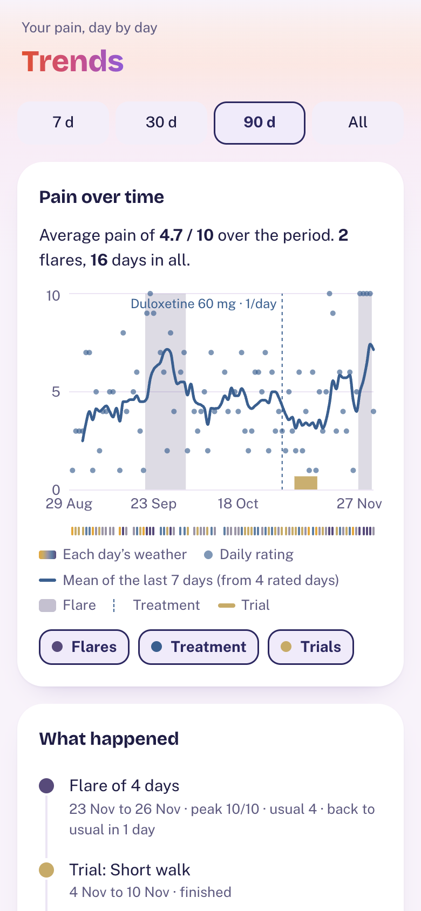
Your curve7-day average, harder days shaded, treatment changes as dotted lines.
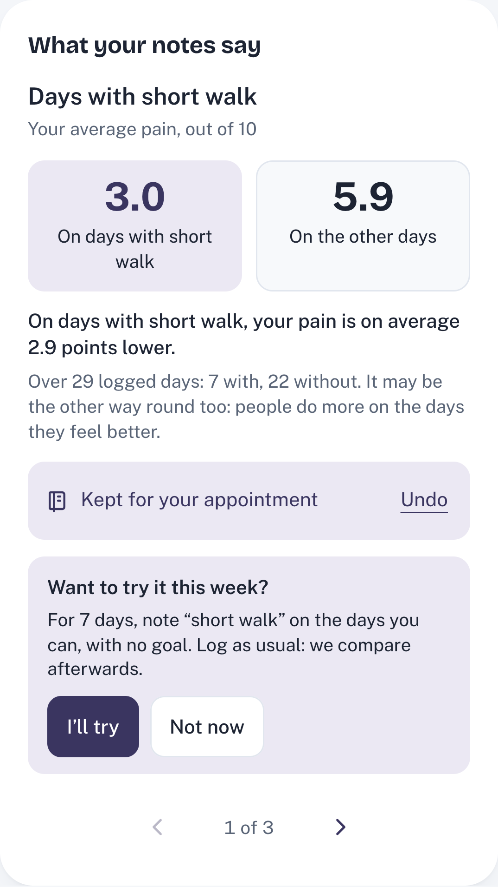
What your notes sayOne lead at a time: keep it, set it aside, or give it a try.
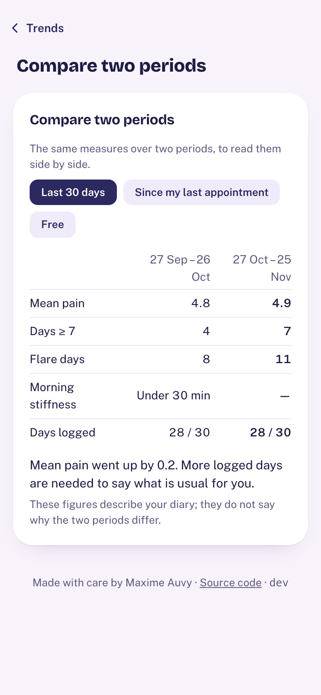
Compare two periodsThe same measures, side by side.
In Trends
For my appointment: at the top, the essentials to tell your doctor.
Your curve over 7, 30 or 90 days or since the start, with what happened: harder days, treatment changes, trials.
Your painful areas: where it hurt, week after week.
Your treatments: what you took, the relief, the effects you noted, and before and after a dose change.
The days of the week when things go best or worst.
Compare two periods, for instance since your last appointment.
After your active days: whether the days after you did a lot are harder than usual.
Before your flares, before your good days: what came before them (sleep, stress…), next to what chance would give.
Your year: in December and January, your year told as a story, with no score.
“Clearly harder than usual” days are those when your pain stays above your usual level for at least three days. In Trends and in the report, the app calls them “flares”.
“What your notes say”
Over the weeks, the app may spot a link in your notes: sleep, stress, the previous day’s activity, what helped. It shows you both averages and the number of days, and you choose:
Note it for my appointment: the lead will appear in your report.
Try it for ten days: the app draws five days with and five days without, and tells you each evening about the next day. On a day without that gets too hard, you can do it anyway. At the end, the app puts the days with and without side by side.
“Not really”: it is set aside, and only comes back if it becomes clearer.
A lead is just a lead. On days you walk, you may hurt less; or you walk because you hurt less. The app reminds you every time. It is an idea to look at, and to talk over with your doctor if it speaks to you.
Would you rather get none of this? A single setting, “Suggestions”, turns all the leads off. And nothing shows during a harder stretch.
OUCH · a guide for users6
6 · Relief
The “Relief” tab: prepared on good days, opened on bad ones
ReliefYour plan, breathe and unwind, your go-to moves.
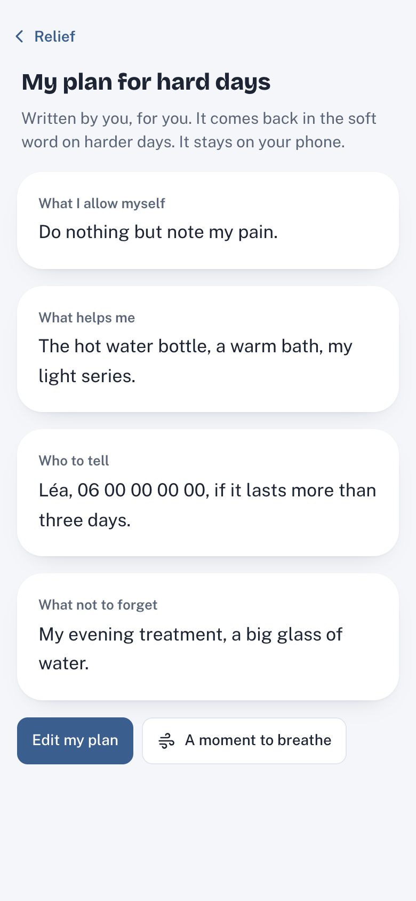
My plan for hard daysFour questions, your answers, shown in large print.
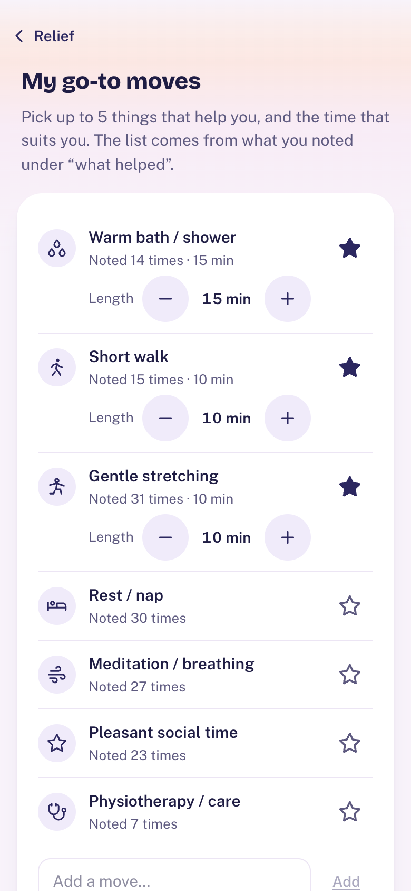
My go-to movesUp to five, each with the length you choose.
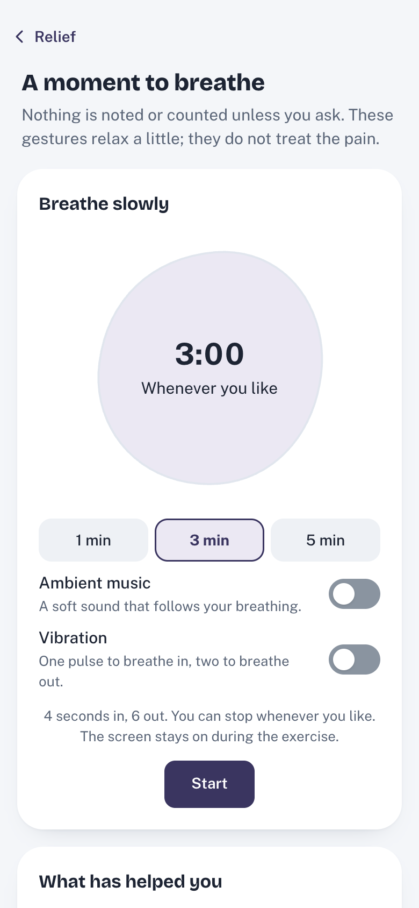
A moment to breathe1, 3 or 5 minutes, offline.
My plan for hard days
On a day when you feel well enough, take five minutes to answer four questions: what I allow myself (cancel, rest, ask for help), what helps me, who to tell, and what not to forget. On the day things go badly, there is nothing left to think about: you open your plan and read what you wrote to yourself. After a flare, the app also offers to write a note to yourself: it comes back during the next flare, with how long your past flares lasted. A paper version of the plan is at the end of this guide.
My go-to moves
The things that help you most often (a warm bath, a short walk, stretching…), each with a timer. You choose the moves and how long they last.
Breathe, unwind
A sun rises in a pebble: breathe in as it rises, breathe out as it goes down. Vibration and background music if you like. Two exercises read step by step: relaxing the body area by area, and a gentle move for neck and shoulders.
In “For you”, now and then
Moving: what studies say: once, what recognised sources say about physical activity for your condition, with their references. To decide what to do and how much, the app points you to your physiotherapist or doctor.
Missed doses: if you have noted several missed doses of a regular treatment, a word without judgement, which mentions a pill organiser or a reminder, and your doctor or pharmacist.
Pressure falling tomorrow: if you turned it on, and only if, in your diary, those days have been harder for you.
A stretch coming to an end: the app notices it in one gentle sentence.
To be honest: these moves can help you unwind a little, but they don’t treat pain, and the screen says so. There is no score and no streak: a day without exercise counts for nothing. If a move hurts, stop it and talk to a professional.
Sheet for a health professionalOne page for someone who doesn’t know you.
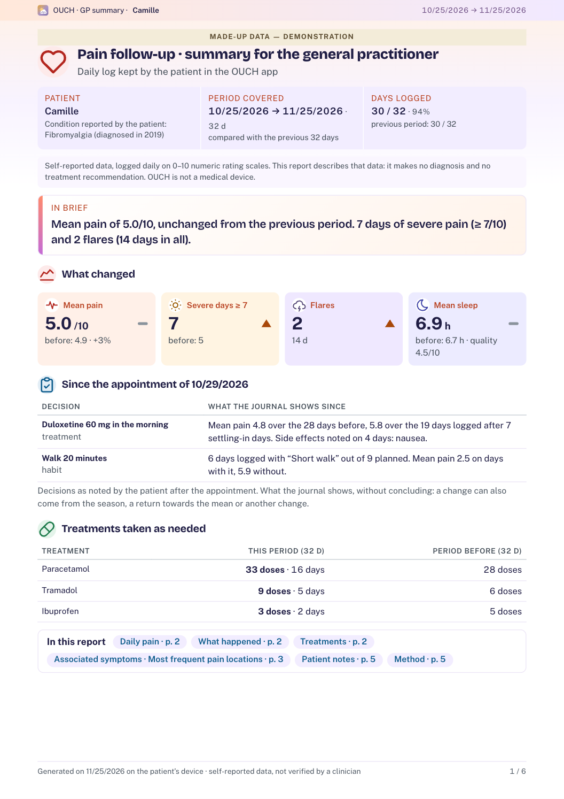
The reportPage 1 of the general practitioner version (made-up data).
Before, during, after
1
BeforeNote the date of the appointment, your questions, and what you want to talk about first. Two weeks ahead, a gentle card reminds you.
2
DuringShow your report on screen, or print it. Your questions are at the top: you won’t forget them at the door.
3
AfterNote what your doctor said and the decisions made together: your next report shows what followed. A prescription? Note its length.
The sheet for a health professional
For the emergency room or a new doctor: your conditions, your treatments, the side effects you noted, your usual pain, what brings relief. You add your allergies and people to contact yourself. Show it, print it or save it as a PDF, in French or in English.
My MDPH file
For the French disability office: your path through the form, the official form pre-filled with your answers, and your certificate prepared for your appointment. Nothing is sent.
The report: which version?
Consultation tab › “Prepare the report”. It covers the time since your last appointment, and compares it with the same length of time just before.
General practitioner
Pain clinic
Length
3 to 5 pages
6 to 10 pages
For whom
Your GP, a rheumatologist, a short appointment
A pain clinic or pain specialist, detailed follow-up
In both
Your pain and how it changed, your treatments, your questions, the leads you kept and your trials
The report describes what you logged, without interpreting it: your doctor draws the conclusions, with you. It is made on your phone; the name you type into it is not stored.
So they have it before the appointment, you can add the PDF to Mon espace santé (France, Documents). If your doctor doesn’t know OUCH, “Reading an OUCH report” helps with a first one.
OUCH · a guide for users8
8 · Your loved ones
Saying how you are, without explaining everything
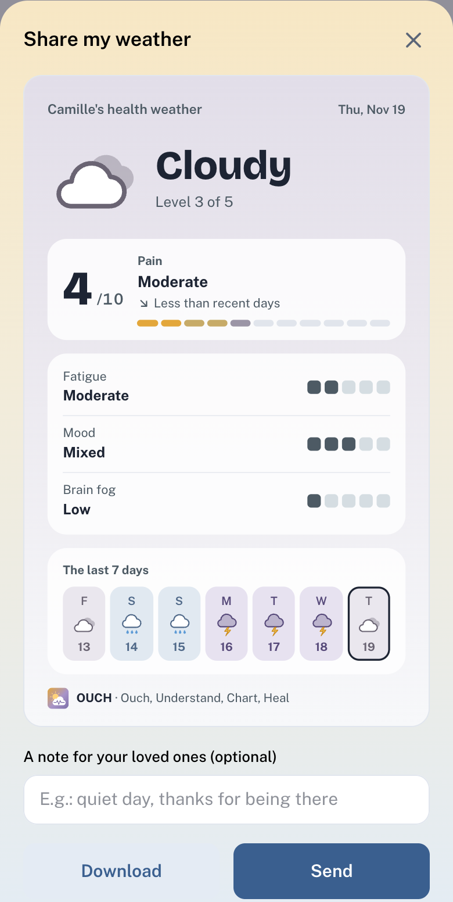
Today’s weatherA picture, a short note, and you send it yourself.
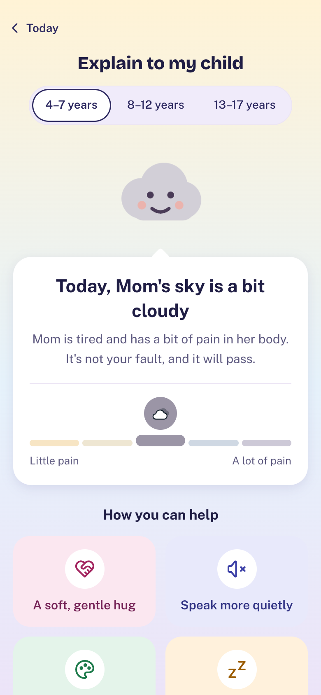
Explaining to your childSimple words, for three age groups.
Your weather of the day, to share
Some days you don’t feel like explaining. From the Today screen, OUCH sums up your day in a picture: clear, hazy, cloudy, rain or storm, with your pain, fatigue and mood, and below it the curve of your last two weeks. You can add a word (“Resting today, call me tomorrow”), then send it by message to whoever you like. Nothing leaves unless you choose it.
The “My kids” page
Made to be shown to your child. It describes your weather in words they understand (“Today, Mom’s sky is a bit cloudy”), suggests ways to help, and explains your condition for their age: 4 to 7, 8 to 12, 13 to 17. You choose “Mom” or “Dad”.
Who sees what: you choose
With whom
What you can share
How
Your doctor
The report (3 to 5 or 6 to 10 pages)
On screen during the appointment, printed, or as a PDF you send yourself.
A health professional who doesn’t know you
The one-page sheet
Show it on screen, print it or save it as a PDF.
Your loved ones
Today’s weather, with a note
A picture you send by message, or that goes out by itself every day to OUCH Duo.
Your child
The “My kids” page
You show it to them on your phone.
Nobody else
Everything else
Your diary, your notes, your leads stay on your phone.
Your weather, every day, on its own
If you have turned on the Dropbox backup, your weather of the day can go out by itself, encrypted, once your day is filled in. Your loved one scans a code you show them once, and looks at it whenever they like in OUCH Duo, a small app made for them, which also explains how to read the picture. They are not notified, and you can turn it all off in one tap: the link then leads nowhere. Anyone who has this code can see your picture of the day: only give it to people you trust. To turn it on: the automatic backup (Settings › My data), then “Share my weather” › “Every day, on its own”.
An idea: today’s weather is often easier to send than a long message. It says “today is hard” without you having to justify yourself, and your loved ones know how to adjust.
OUCH · a guide for users9
9 · Your data
Your diary lives with you: keep it safe
Where it is
In your phone’s browser, and nowhere else: no account, no server. Nobody but you can reach it remotely, not even OUCH’s developer.
What can make it disappear
Losing or changing your phone, clearing the browser’s data, or a browser making room. Safari even clears sites that aren’t installed after a week without a visit: install OUCH on your home screen.
What protects it
A backup: a file encrypted with a password you choose, to keep wherever you like. The app reminds you to make one when your diary has changed.
Making a backup
1
Settings › My dataTap “Export a backup”.
2
Choose a passwordKeep it somewhere safe. OUCH doesn’t know it: without it, the backup cannot be opened, by anyone.
3
Store the fileOn iPhone, “Save to Files” (in iCloud Drive, for example). Elsewhere: your personal cloud, or an email to yourself.
Changing phones
Install OUCH on the new one, then Settings › My data › “Import a backup”, and your password.
As an option, off by default, Settings › My data › “Automatic backup” sends the same encrypted file to your Dropbox on its own. The CSV export, on the other hand, is not encrypted: it is for analysing your data, not for restoring it.
A lock, if others use your phone
Settings › Lock: a four-digit code hides OUCH after one minute. It hides the screen; it doesn’t encrypt your diary. OUCH doesn’t keep your code: if you forget it, you will need to clear the device and restore a backup.
What leaves your phone
What you send yourself: a report, a sheet, your weather of the day, a backup.
Automatic weather, if you turn it on: your position goes to the Open-Meteo weather service, and a rounded position to OpenStreetMap for your town’s name.
To your Dropbox, if you turn them on: the automatic backup and your weather of the day for a loved one, always encrypted.
An “active this week” signal, once a week, with no health data and no identifier, to know how many people use OUCH. A box in Settings turns it off.
The details of what each service receives are in OUCH’s privacy policy, on the project page (PRIVACY.md file).
If you lose your phone
Your diary goes with it: that is why the backup matters. With your latest backup and its password, you get everything back on a new phone, up to the day of that backup.
If you want to stop
Settings › My data › “Delete my data” erases everything from this device, for good. The backups you exported stay where you stored them: delete them yourself if you no longer want them.
OUCH · a guide for users10
10 · Frequently asked questions
What people often wonder
I haven’t logged anything for a week. Is it ruined?
Not at all. Missing days stay empty, nothing is invented, and everything you did log is still useful. Pick it up whenever you like. For yesterday, the app offers to go back to it; for older days, use the Journal.
I never know which number to pick.
There is no right answer. What matters is using the scale your own way, the same way from one day to the next. Think of your whole day, not just the moment you log it.
How many things should I track?
As few as you can while it stays easy. Pain is enough. Add one or two measures that speak to you (often sleep), and remove the ones you never fill in.
Won’t keeping a diary make me think about my pain all the time?
It is a real question, and it hasn’t been studied yet. OUCH is designed to take a minute, no more. If it weighs on you, turn off suggestions, log less often, or take a break: your diary will wait for you.
I’m not comfortable with my phone.
Someone you trust can help you install it and go through the assistant. After that, there is just one number to tap each day; the rest can wait, or never be used.
The app shows me a lead. Should I change something?
Nothing obliges you to. A lead is an idea drawn from your notes. If it speaks to you, you can try it for ten days, or keep it to discuss with your doctor. For a treatment, change nothing without them.
My doctor has never heard of OUCH.
The report can be read without knowing the app. You can also leave them “Reading an OUCH report” (one page) or the leaflet for health professionals.
Can anyone read my diary?
Remotely, no: it isn’t sent anywhere. But someone holding your unlocked phone can open it: that is what the code lock is for.
OUCH is free. What’s the catch?
There isn’t one: no ads, no selling of data, and nothing to sell since nothing is collected. OUCH is free software and its code is public. After fifteen days of diary, a discreet card at the very bottom of Settings offers to support the project with a donation; nothing is unlocked in return.
Can I use it on my phone and my tablet?
Your diary lives on one device: the two don’t sync. A backup lets you move it from one to the other, but the simplest is to pick one.
What OUCH doesn’t replace
OUCH is a diary. It makes no diagnosis, recommends no treatment and doesn’t monitor your health: nobody looks at what you log. If your pain changes in nature, if a new symptom worries you, or if you are not doing well emotionally, talk to your doctor without waiting for your next appointment. In an emergency, call your local emergency number (112 across Europe). If you have thoughts of suicide, contact a crisis line straight away: in France, the 3114; in the UK and Ireland, Samaritans on 116 123; both free, day and night.
OUCH · a guide for users11
Appendix · To tear off and keep
My plan for hard days, on paper
To fill in on a good day. You can copy your answers into OUCH (Relief › My plan), or keep this page on your fridge.
What I allow myself
Cancel, rest, say no, ask for help…
What helps me
A warm bath, a short walk, a TV series, a phone call…
Who to tell
A name, a number, what I can ask them for.
What not to forget
My as-needed treatment, drinking, eating a little, it’s only a phase…
Before my next appointment
I noted the date in the Consultation tab.
I wrote my questions, and what I want to talk about first.
I looked at the leads I kept.
I prepared the report: general practitioner or pain clinic.
I know when my prescription ends.
After the appointment
I wrote down what my doctor told me.
I noted a treatment change, if there was one.
I noted how long my new prescription lasts.
Once a month
I export a backup (Settings › My data).
My backup password is stored somewhere safe.
Words to keep
“One number is enough.” · “A missed day doesn’t matter.” · “A lead is not proof.” · “I decide what I share.”
OUCH · a guide for users · maxauvy.github.io/OUCH12
 maxauvy.github.io/OUCH
maxauvy.github.io/OUCH